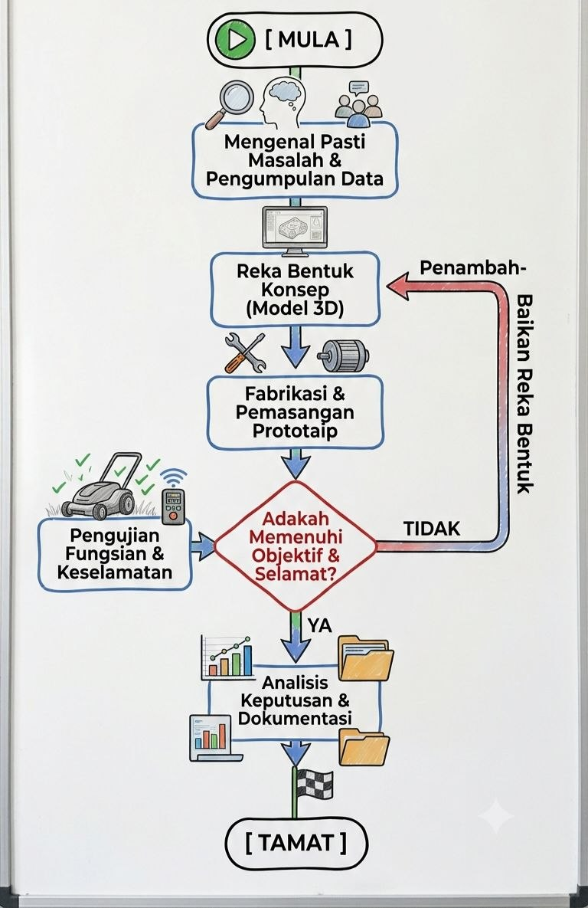
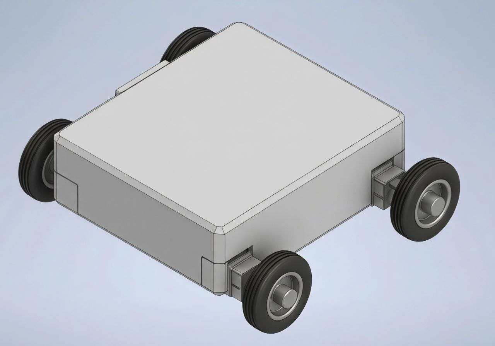
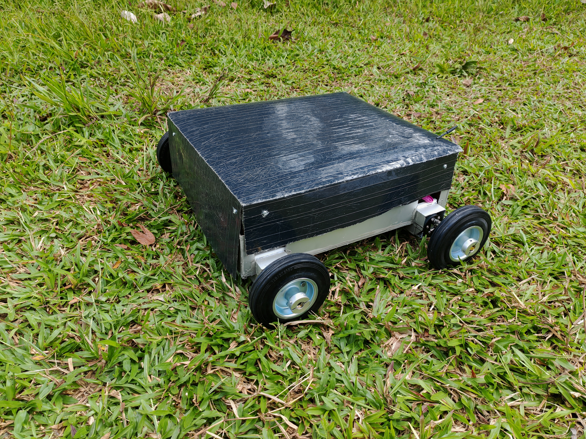
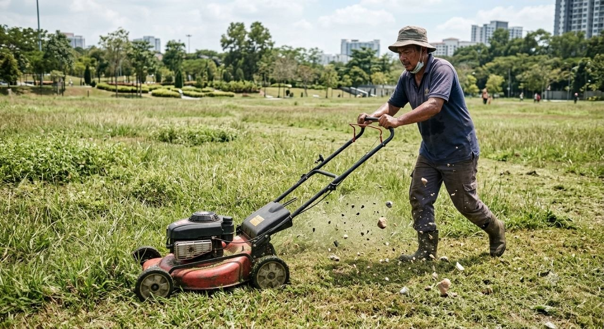

Latar Belakang
- Mesin pemotong rumput tolak masih menjadi kaedah utama penyelenggaraan landskap.
- Berhadapan dengan isu beban fizikal, risiko keselamatan, dan cuaca ekstrem.
- Keperluan peningkatan kecekapan, keselamatan pekerja, dan pemodenan industri.
Objektif Projek
-
1Merekabentuk mesin pemotong rumput kawalan jauh.
-
2Meningkatkan tahap keselamatan pengguna semasa beroperasi.
Faedah Projek
Pemotongan Pantas & Cekap
Minimum Risiko Kos Perubatan
Elak Serpihan Batu Melayang
Operasi Tanpa Letih Fizikal
Metodologi & Konsep
Carta Alir Projek

Model 3D (Reka Bentuk Konsep)

Spesifikasi Prototaip

Dimensi
41 x 36 cm
Berat
5 kg
Bahan
Aluminium
Lain-lain
Kawalan 4WD
SEBELUM
Kerja berat yang berisiko, meletihkan dan bergantung sepenuhnya kepada tenaga manusia.

SELEPAS
Operasi yang lebih selamat, pantas, mesra pengguna, dan berteknologi tinggi.
Potensi Pasaran
-
Sesuai untuk kontraktor landskap, sekolah, dan kediaman.
-
Kos pembangunan yang ekonomik dan berpatutan.
-
Harga jualan yang berdaya saing di pasaran.
-
Kawalan jauh canggih dengan kos lebih mesra bajet.
Kesimpulan & Cadangan
Kesimpulan Teknikal
- Berjaya membangunkan prototaip mesin pemotong rumput kawalan jarak jauh yang berfungsi sepenuhnya.
- Meningkatkan keselamatan dan keselesaan operasi dengan menghapuskan beban fizikal serta risiko kecederaan.
- Objektif reka bentuk kawalan jarak jauh dan peningkatan keselamatan pengguna berjaya dipenuhi sepenuhnya.
Cadangan Masa Hadapan
- Memodenkan sektor landskap dan meningkatkan piawaian keselamatan pekerja secara menyeluruh.
- Integrasi sensor navigasi automatik untuk pergerakan mandiri (autonomous).
- Penggunaan sumber tenaga solar untuk pengecasan yang lebih mesra alam.